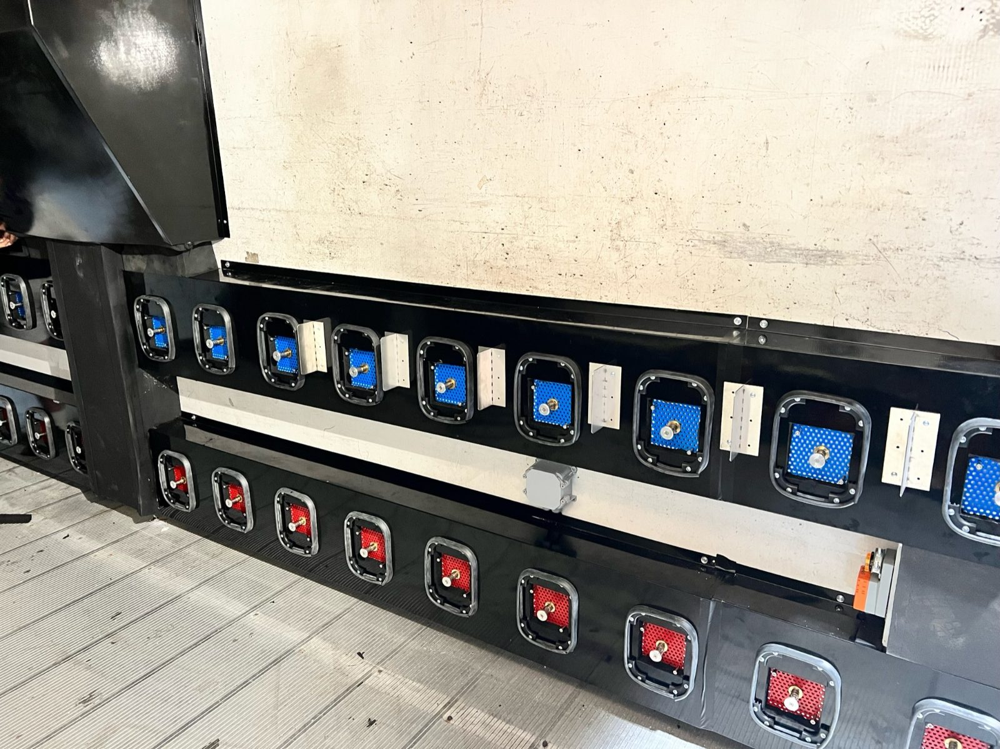
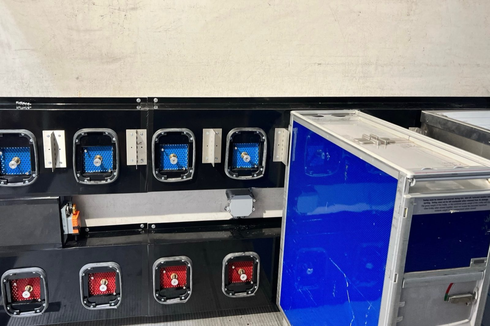

Vehicle ChillRail
US Patent Application 17/893,958 — Notice of Allowance, August 2024
Any high loader, any age. Two days to fit, no vehicle downtime, and no engine to go wrong.
2 daysRetrofit, against 3–6 months for a traditional conversion
~$23,800Net saving per truck per year
SuitcaseUnit size, mounted underneath — clear of apron impact damage


Advantages
- Chills the food in the cart, not the whole vehicle — and only the carts that need it
- More than 85% less refrigeration energy than a traditional system
- Runs on spare vehicle power, inverter driven, Net Zero carbon
- Eliminates dry ice entirely — and its 35–50% wastage
- Cloud temperature and GPS logging with no driver input
- Lightweight — no meaningful change to payload capacity
- Fits any size of vehicle; retrofit in two days with zero downtime
- High-level oven box for ovens, milk and ice cream
- Enables preloading and de-peaking, freeing dispatch cooler capacity
- Moves to another vehicle when this one reaches end of life
- Clean HEPA-style and UV air path, maintaining a food-safe environment
- Three years in the field with no failures
Against the alternatives
- Non-refrigerated vehicle + dry ice — 50c/lb, 35–50% wastage, uneven chilling, no records
- Factory refrigerated vehicle — chills the cart exterior; 40-minute recovery after every door opening; typically fails within 16 months
- Converting a non-refrigerated vehicle — over $45,000, 3–6 month lead time, 6–10 weeks off the road, and adds around 2,500 lb
- ChillRail — cheaper to fit than a conversion, two days, no downtime, no weight penalty, full records
Comparison drawn from Inalgesco field inspections and Carrier 850 service data. Traditional conversion and repair costs quoted by third-party service centres.
Book a 30-day paired trial
Fit ChillRail to one truck, leave an identical truck unmodified, and run both on live routes for 30 days. Fuel, service calls, pull-out temperatures and cold-chain compliance all become your own audited data before you commit to anything.
Arrange a trial